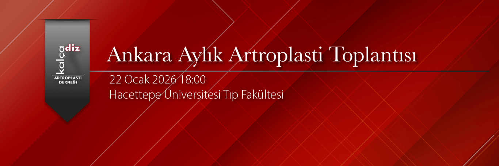

Değerli hocalarım ve meslektaşlarım,
Kalca Diz Artoplasti Dernegi olarak Ankara Aylık Artroplasti toplantılarına sizlerin kıymetli katılımları ile üçüncü toplantımız ile devam ediyoruz.
Hacettepe Üniversitesi ev sahipliğinde 22 Ocak 2026 tarihinde 18:00 de Total ve Unikondiler Diz Artroplastisi konuları tartışılacaktır. Bu konuları sayın hocalarımiz Prof Dr Mazhar Tokgözoglu ve Prof Dr Turgay Çavuşoğlu’ndan dinleme olanağı bulacağız. Vaka tartışmaları ve makale sunumları da içeren toplantıya konuya ilgi duyan herkesi bekliyoruz.
Saygılarımla
